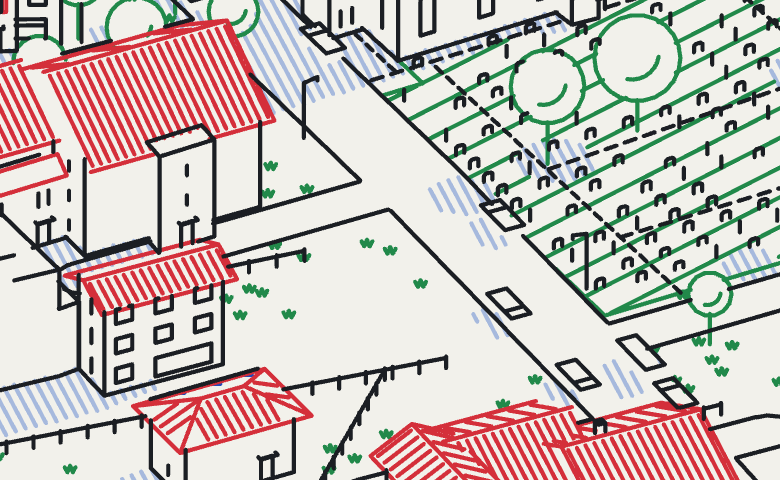
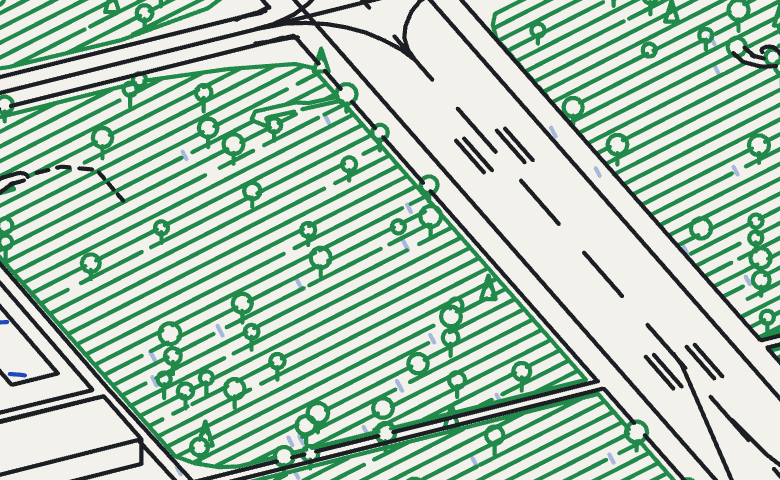
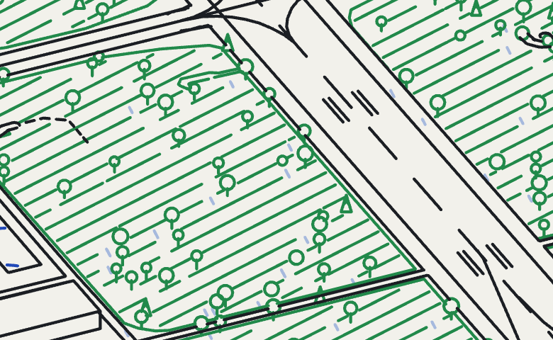

15 November 2026 · Original review · Round 2
Park hatching now gives more space to trees, buildings and open ground. Base spacing increases from 1.1 to 1.8 mm, following the existing Detail and pen-width controls. Hatching beneath headstones and pitch markings remains half as dense, with the same line angle and phase.
Clearance probes at 1.5 pen widths stop the hatch before park boundaries, roads, water, building footprints, shadows and visible objects. This separates texture from outlines and may leave very narrow lawn strips unhatched. The masks and depth buffer determine the clearance; this is not a mathematically exact offset curve. Park outlines, tree silhouettes and object placement are unchanged.



Four places at two scales, Detail 1 and a 0.35 mm pen, optional OSM tags off. Plotting time is estimated. Waste percentage is largely unchanged, rising slightly at the airport as clean hatch ink is removed. The airport at 1:4000 saves about ten estimated plotting minutes.
| Sheet | Waste before → after | Estimated time change |
|---|---|---|
| Mollis 1:1000 | 7.0% → 7.0% | -0.2% |
| Mollis 1:4000 | 15.1% → 15.1% | -0.4% |
| Nördlingen 1:1000 | 6.6% → 6.6% | -0.2% |
| Nördlingen 1:4000 | 12.9% → 12.9% | -1.5% |
| Rye 1:1000 | 6.8% → 6.8% | -1.9% |
| Rye 1:4000 | 14.5% → 14.5% | -2.9% |
| Zürich Airport 1:1000 | 6.8% → 6.9% | -0.9% |
| Zürich Airport 1:4000 | 13.3% → 13.4% | -9.7% |
Before lab report · After lab report (local generated files)
Reviewed all 12 golden sheets, eight LOD sheets and selected close-ups, including the three before/after pairs above. Eleven golden summaries change; Amsterdam is unchanged. Only park grass changes at the feature level, along with the resulting plot plan and SVG summary. Object counts and classification remain unchanged.
Regression tests check visible clearance at lawn and road edges with 0.35 and 0.7 mm pens. The full suite also checks determinism, panning, settings gates and valid linework. No physical proofs were inspected, nor every combination of bearing, seed and Detail, or all 29 presets. Footpaths can still cross the lawn hatch; individual tree silhouettes, façade texture and wider composition remain for later rounds.